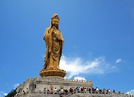

| 雄峰俊岭 | 滔滔大河 | 都市盛景 | 互动 | |||||
|
 普陀山是我国四大佛教名山之一，位于浙江舟山群岛，观音菩萨道场，同时也是著名的海岛风景旅游胜地。如此美丽，又有如此众多文物古迹的小岛，在我国可以说是绝无仅有。普陀山位于杭州湾以东约100海里，是舟山群岛中的一个小岛，全岛面积约12.5平方公里。 普陀山的海天景色，不论在哪一个景区、景点，都使人感到海阔天空。虽有海风怒号，浊浪排空，却并不使人有惊涛骇浪之感，只觉得这些异景奇观使人振奋。普陀山作为佛教胜地，最盛时有82座寺庵，128处茅篷，僧尼达4000余人。来此旅游的人，在岛上的小径间漫步，经常可以遇到身穿袈裟的僧人。美丽的自然风景和浓郁的佛教气氛，使它蒙上一层神秘的色彩，而这种色彩，也正是它对游人有较强吸引力的所在。 普陀山既以海天壮阔取胜，又以山深邃见长。登山揽胜，眺望碧海，一座座海岛浮在海面上，点点白帆行驶其间，景色极为动人。前人对普陀山作了这样高的评价：“以山而兼湖之胜，则推西湖；以山而兼海之胜，当推普陀。”把普陀与人间天堂西湖相比，应该说，这个评语是客观的。 |
||||